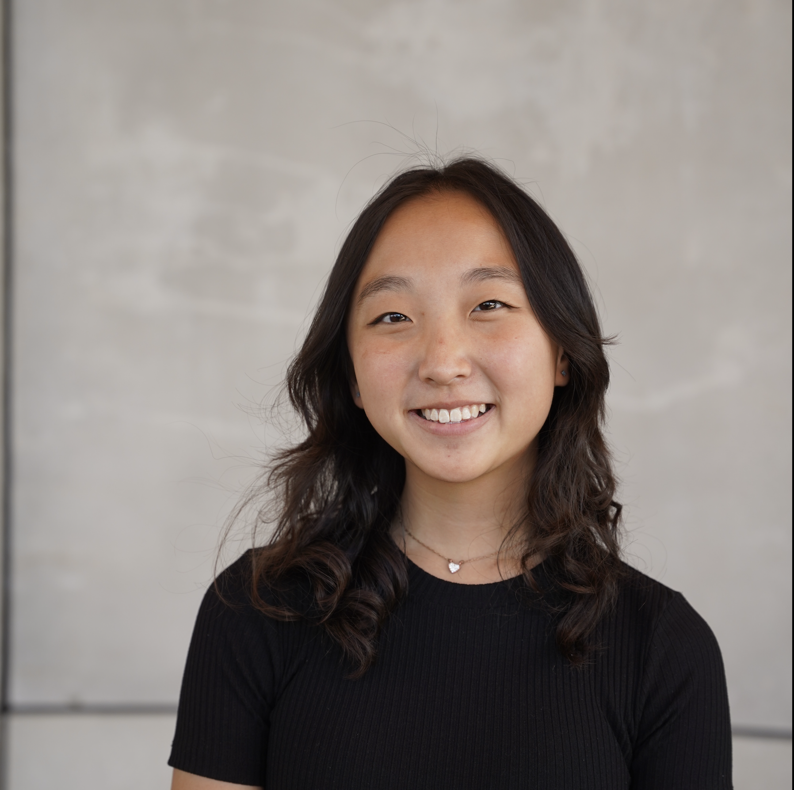

Hi, I'm


你好! I'm Angelina, a current second-year undergraduate student at Cornell University
pursuing a degree in computer science. Passionate about delving into diverse realms of computer science, I'm enthusiastic about exploring innovative
solutions in software development and its intersections in technology to make a positive impact in communities.
Outside of studies, I enjoy playing the violin (
my music background ), game pigeon word
games, and tennis (
read an article
about me and my sister here! ). I love getting to know people, so feel free to reach out at asc337@cornell.edu, or through my linked socials!
Summer Research Intern @ Cornell University May 2024 - Present
Working in in C.Psyd (computational psycholinguistics) under Professor Marten van Schjindel.
Systems Planning Intern @ Iowa Department of Transportation May 2023 - August 2023
Assisted in Iowa’s statewide traffic data collection efforts and survey, collected data from surveillance footage from Miovision cameras pertaining to traffic flow.
District Office Intern @ Ames Community School District May 2022 - August 2022
Managed the front desk; aided projects from various office personnel including data entry and scanning on Windows software.
Violinist, Outreach Chair @ Cornell Symphony Orchestra August 2024 - Present
Website Chair @ Alpha Omega Epsilon, Professional Engineering Sorority February 2024 - Present
Advocacy Chair @ Cornell Hunger Relief October 2024 - Present
Reserve Club Tennis September 2024 - Present
awarded best ui out of 26 teams, appdev hack challenge
A meal-planning app with a Swift UIKit frontend, and Python backend; noms helps people plan their meals efficiently by allowing them to organize their meal schedules and track ingredients, make meal planning easy and accessible for everyone.